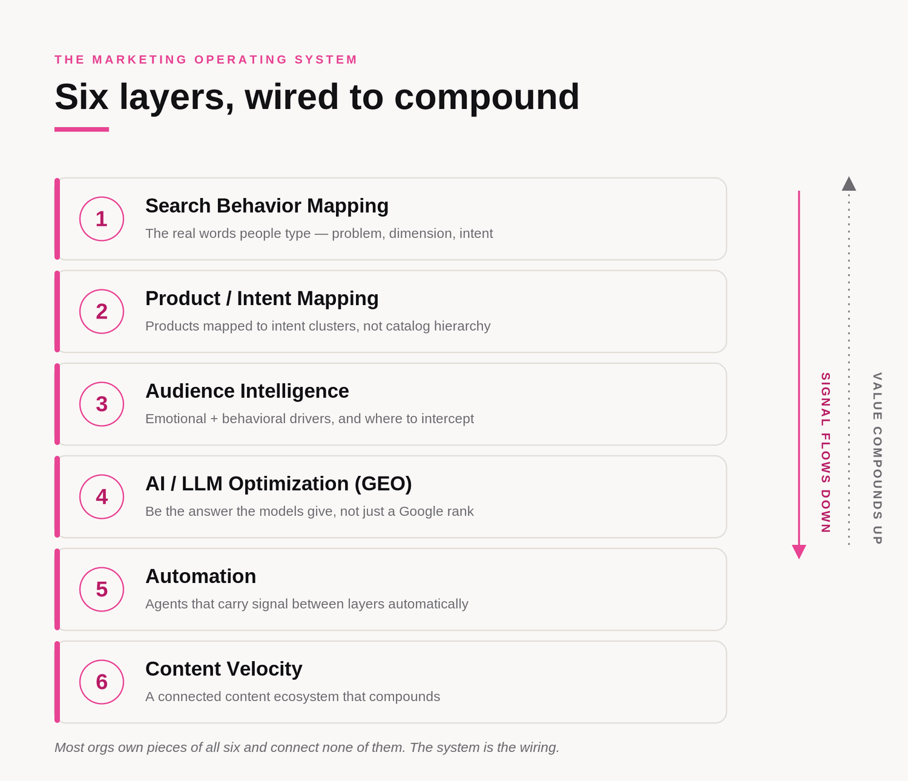
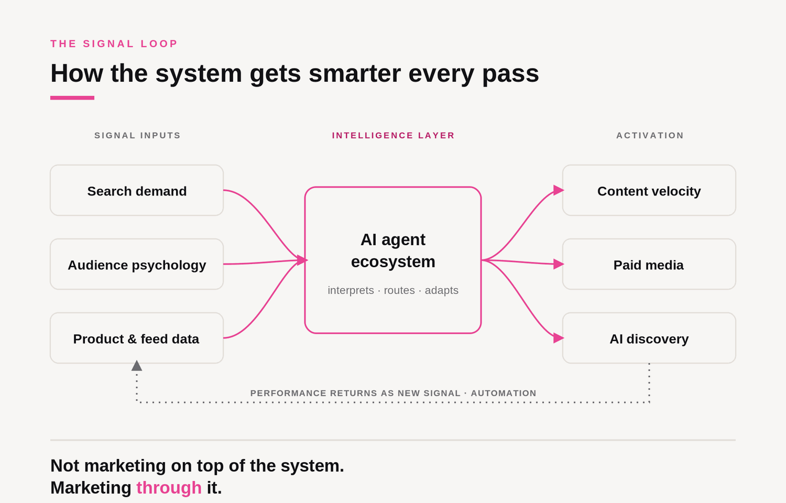
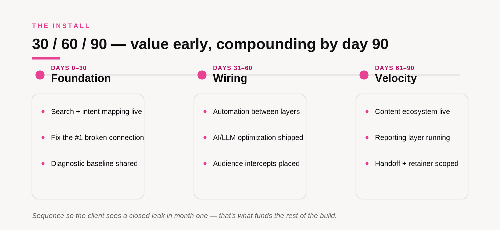

Marketing Glossary · FRDTLAB
Marketing Operating System
A marketing operating system is the connected layer that makes your marketing channels feed each other instead of working in silos. Unlike a marketing stack, which is a collection of separate tools, a marketing operating system is the system of connections that routes signal between search, product data, audience, AI discovery, automation, and content, so the intelligence from each channel compounds instead of evaporating in the gaps between teams.
You don't have a channel problem. You have a connection problem.
Walk into almost any marketing org and it runs the same way. An SEO person, a paid person, a social person, an email person. Each works their own channel. Each is measured on their own number. None of them feeds the others. The work gets done, and the intelligence evaporates in the gaps between them. That is not a talent problem or an effort problem. It is a wiring problem, and no amount of new tools or new campaigns fixes wiring.
What it is, precisely (and what it isn't)
The words get used loosely, so here is the clean line. A marketing operating system is not the tools you own and it is not the schedule you ship. It is the connective infrastructure that decides how a single insight moves through your entire marketing organization and turns into value in more than one place.
| What it governs | What it can't do alone | |
|---|---|---|
| Marketing stack | The tools you own: SEO platform, ad accounts, email, CMS, analytics. | Owning every tool and still having no system. Parts, not wiring. |
| Campaign calendar | What ships and when. Output and scheduling. | Deciding whether one input becomes value across channels. Motion, not compounding. |
| Marketing operating system | How signal moves between layers, so intelligence compounds instead of leaking. | This is the missing layer. It sits on top of the stack you already own. |
You can own a full stack and run a full calendar and still not have an operating system. That gap is exactly why so many teams feel busy and disconnected at the same time.
The six layers
A marketing operating system is built from six layers. The layers matter less than the connections between them, because the money almost never leaks inside a layer. It leaks in the gaps.

Search Behavior Mapping
How your buyers actually search now, across Google, AI assistants, and social, and the real demand you are and aren't showing up for.
Product & Intent Mapping
Your products, pages, and offers mapped to the intent behind the search, so what you sell matches how people look for it.
Audience Intelligence
The language, segments, and signals of the people you serve, mined from reviews, calls, and behavior instead of guessed at.
AI & LLM Optimization (GEO)
Making your brand legible and trustworthy to ChatGPT, Perplexity, and Google's AI answers, so you get recommended, not just ranked.
Automation
The workflows that move signal and do the repeatable work, so the system runs without a person holding every step together.
Content Velocity
Producing at volume without burnout, so structured output becomes search signal, audience training, and authority at once.
The integration model: one input, value everywhere
This is the part no stack and no calendar gives you, and it is the whole differentiator. In a marketing operating system, a single piece of signal does not stop at the team that found it. It moves.
Here is how signal actually moves once the six layers are wired together:

Search demand, audience psychology, and product data feed an intelligence layer that interprets, routes, and adapts. That layer activates content, paid, and AI discovery, and the performance comes back as new signal. In a disconnected org that loop never closes, so every campaign starts from zero. In a system it closes on every pass, and the machine gets smarter each time. That is what compounding actually looks like, and it is why the operating system beats more spend or more tools.
How to build one
You install a marketing operating system in three moves. This is the method, and it works the same on your own team or a client's.

Find where the signal leaks
Score all six layers and the connections between them. The leak is almost never inside a layer; it is in the gaps. You come out with a leak profile: the two or three places the most money is draining out right now.
Map the connected system
Decide which layers exist, which get built, and exactly how signal will move between them. One page you can see. That map is the difference between a pile of tactics and a system.
Sequence it on a 30/60/90
Foundation, then wiring, then velocity, on a timeline a CFO can accept. You build until it compounds and runs without you in every step. It keeps working when you're not in the room. That is the whole point.
Frequently asked
What is a marketing operating system?
The connected layer that makes your channels feed each other instead of working in silos. Not a tool. The infrastructure that routes signal between search, product data, audience, AI discovery, automation, and content, so intelligence compounds instead of evaporating in the gaps between teams.
How is it different from a marketing stack?
A stack is the tools you own. An operating system is the connections between them. You can own a full stack and still have no system, which is exactly why most orgs feel busy and disconnected at once. The stack is the parts. The operating system is the wiring.
Marketing operating system vs campaign calendar?
A calendar schedules output. An operating system governs how signal moves. A calendar tells you what ships and when; it says nothing about whether a search insight becomes a feed change, a naming decision, an ad hook, and content an AI can retrieve.
What are the layers?
Six: Search Behavior Mapping, Product and Intent Mapping, Audience Intelligence, AI and LLM Optimization (GEO), Automation, and Content Velocity. The connections between them matter more than the layers themselves.
How do you build one?
Diagnose where signal and money leak across all six layers and their connections. Architect the connected system on one page. Install it on a 30/60/90 sequence, foundation first, then wiring, then velocity, until it runs without you.
Who needs one?
Fractional CMOs, VPs of growth, and heads of marketing measured on outcomes who inherited disconnected channels. If four specialists each work their own number and none feed the others, you have a stack without an operating system.
Does it replace my current tools?
No. It connects the tools you already have. Most orgs need the wiring between the tools they own, not more tools. That is why installing a system is usually faster and cheaper than the rebuild people expect.
How long does it take to install?
A working install runs on a 30/60/90: foundation in month one, connections and automations in month two, content velocity and compounding in month three. You see the first leaks closed inside weeks.
Find your leaks
See where your marketing is leaking signal.
Start with the free diagnostic to find the gaps, then install the system that closes them. It compounds, and it runs when you're not in the room.